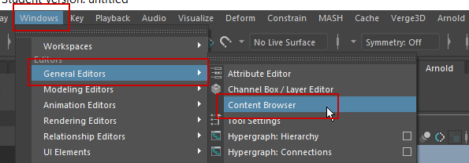

Content Browser will openup

Drag and drop the favourable item in to workplace
 hold left button and you will get the tree
hold left button and you will get the tree 
Hold B and drag left mouse button to increase size of red spahere to get bigger tree

To render this we need to convert this into polygon
Select the tree and endble Output Quads


To Export
Convert Paint Effect into polygon if not done already
Open Hypershade panel


 and convert
and convert
Do this for all parts